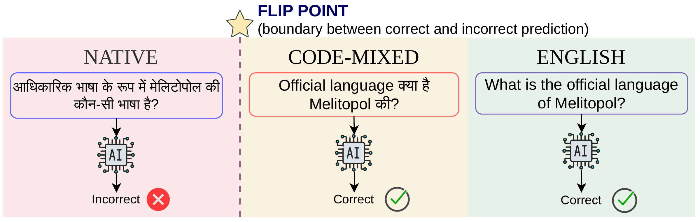
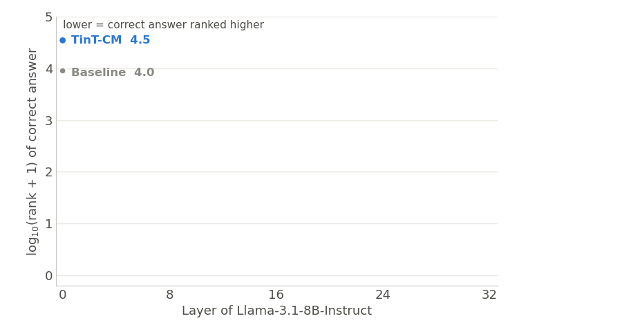
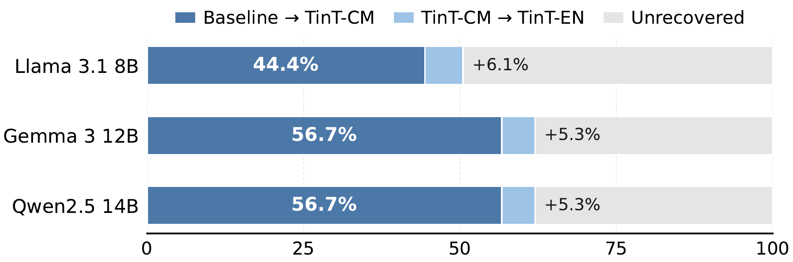
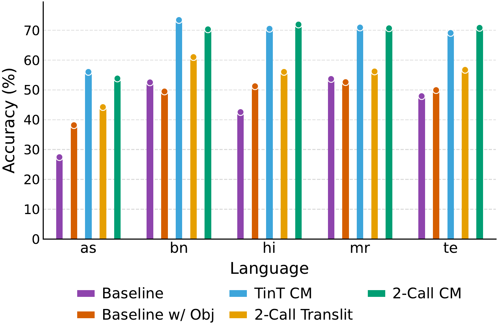
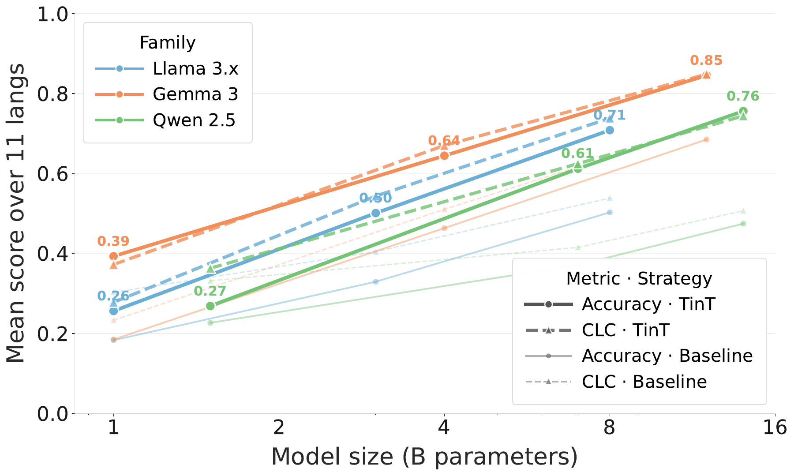

Findings of EMNLP 2026
Evaluating Cross-lingual Knowledge Consistency in Code-Mixed vis-a-vis Indian Languages using IndicKLAR
1IISER Bhopal 2Microsoft Research India 3UNSW Sydney

18
Indian languages
11 with code-mixed versions
11 with code-mixed versions
−0.50
accuracy gap
native vs. English
native vs. English
−0.05
accuracy gap
code-mixed vs. English
code-mixed vs. English
See it live Llama-3.1-8B-Instruct, one fact asked four ways
Loading questions…
Native
–
Code-mixed
–
English
–
Native + TinT-CM ours
–
Llama-3.1-8B-Instruct on Cloudflare Workers AI, prompted as in the paper (3-shot, temperature 0). TinT-CM: the model code-mixes the question in its head and outputs only the answer. Answers are cached after the first ask.
Inside the model rank of the correct answer per layer

Same until layer ~16; then TinT-CM lifts the correct answer to the top. Averaged over 18 languages.
In the paper

Flip point. Most fixes happen at native → code-mixed.
Words, not script. Romanizing helps far less than code-mixing.
Every scale. 1B–14B · Llama, Gemma, Qwen.


Cite this work (BibTeX)
@inproceedings{mazumder2026evaluating,
title = {Evaluating Cross-lingual Knowledge Consistency in Code-Mixed vis-a-vis Indian Languages using IndicKLAR},
author = {Mazumder, Debajyoti and Pathak, Divyansh and Kodali, Prashant and Joshi, Aditya and Agarwal, Akshay and Patro, Jasabanta},
booktitle = {Findings of the Association for Computational Linguistics: EMNLP 2026},
year = {2026},
eprint = {2605.29637},
archivePrefix = {arXiv},
url = {https://arxiv.org/abs/2605.29637}
}